2026-11-02T19:22:28.526Z · ltx-2.5, no references, one prose prompt from a story and the guide · 384 credits · 6 LLM calls (gpt-6.1-sol) · docs: V3/docs/02-case-1-text-only.md
Brief. A 16-second widescreen night street-racing action scene with sound: a starter counts down 'three, two, one, go' at the line, two modified cars launch, and while they race each driver shouts one short line to the other over the engines; end on the winner crossing the finish.
| V3 | MCP | |
|---|---|---|
| the reference | none | nothing attached |
| the still (seed / first frame) | none (text only) | no still: it went straight to video |
| the video call | chosen in code: text-to-video on ltx-2.5 480p, 16 s, audio on, no references. ltx-2.5 is fixed for the free tier in V3; the story decided audio. | chosen by the chat model: create_video_from_text on ltx-2.5 480p, 16 s, audio on, no references. It gave no reason for the model; its reply was the download link only. |
| credits · time | 384 · 45 s of generation | 384 · 74 s end to end |
FORMATCreate a 16-second widescreen cinematic night street-racing action scene WITH synchronized sound and intelligible English dialogue. LOOKA closed urban street race course at night, wet asphalt reflecting neon lights, two modified cars: a red coupe driven by an adult woman and a blue coupe driven by an adult man. CONTINUITYMaintain these cars and drivers consistently. LOOKTight, fast-paced coherent cinematic editing with clear spatial continuity. BEAT 10–4 seconds: both cars stationary side by side at the starting line, engines revving. An adult starter standing safely beside the course clearly counts aloud: 'Three, two, one, go!' Give each count its own beat; cars launch only on 'go'. BEAT 24–7 seconds: both modified cars launch together with tire squeal, low tracking shot racing alongside, roaring engines and shifting gears. BEAT 37–10 seconds: quick interior closeup of the red-car driver looking toward the other car and shouting exactly 'Try to keep up!' over the engines. BEAT 410–13 seconds: quick interior closeup of the blue-car driver shouting back exactly 'Not a chance!' while accelerating. Dialogue is audible above engine noise, each line assigned only to its correct speaker with synchronized mouth movements, no simultaneous dialogue. BEAT 513–16 seconds: exterior tracking shot shows red coupe edging ahead, then a decisive wide finish-line shot: red coupe crosses a clearly painted checkered finish line first, blue coupe just behind. End on the winner crossing the finish, no extra epilogue. Realistic high-energy action, dynamic headlights, detailed modified cars, controlled camera movement, believable vehicle physics. Sound: starter's countdown, two short driver lines, loud racing engines ducked under speech, gear shifts, tires and night-city ambience. No narration, no subtitles, no music.
| V3 case 1 score | 62 / 100 · A visually coherent nighttime street race delivers the exact opening countdown and two short taunts, but lacks a visible starter, clearly modified cars, verified driver-to-driver dialogue, and an unambiguous winning finish. |
| MCP score (this judging) | 73 / 100 · The video delivers a polished nighttime launch and racing exchange with the supplied dialogue, but the finish is undermined by duplicated cars and contradictory travel directions that obscure the winner. |
| Pairwise | mcp wins, clear (mcp was shown first) · The first video better matches the brief with a visible starter, clearly modified cars, separately timed driver taunts, and a marked finish-line crossing, although its final shot has continuity glitches. The second includes the countdown and racing dialogue but lacks a visible starter and ends with cars driving away rather than a clearly identifiable winner crossing the finish. |
| sound, transcribed | V3: [0-2.5 s] "Three, two, one, go!" [6.6-15.8 s] "Keep up! Not tonight!" MCP: [0-4 s] "Three, two, one, go!" [9-10 s] "Try to keep up!" [11-12 s] "Not a chance!" |
| must-have | V3 | MCP |
|---|---|---|
| A starter counts down 'three, two, one, go' at the start line, audibly, at the beginning. | partly The transcript confirms the exact countdown at 0–2.5 seconds, with two cars staged side by side, but no starter or clearly marked start line is visible. | yes A starter stands between the staged cars, and the supplied transcript confirms the exact countdown at 0–4 seconds. |
| Two modified cars launch from the line and race. | partly The red and silver cars advance together and race side by side, but a distinct launch is weakly established and substantial modifications are not clearly visible. | yes The modified red and blue cars are staged together, advance past the starter, and appear racing alongside each other. |
| During the race each driver shouts one short line to the other, audibly, over the engines. | partly The transcript supplies 'Keep up!' and 'Not tonight!' during the race, but the frames do not establish that each driver delivers one to the other; engine sound and vocal delivery cannot be verified from the transcript. | partly The transcript supplies two short racing taunts at 9–10 and 11–12 seconds, matching the respective car close-ups; the blue driver visibly shouts, but speaker attribution for the red car and audibility over engines are not fully verifiable. |
| It ends on the winner crossing the finish. | partly The red car passes a transverse white road marking near 13 seconds, but it is not clearly identified as the finish or shown decisively winning; the final frame instead shows it driving away. | partly The red car crosses a checkered road marking near 13 seconds, but the final frame shows additional red-car imagery and opposing car orientations, making the winner and closing action inconsistent. |
| Night, street, about 16 seconds, widescreen 16:9. | yes The frames consistently show a lamp-lit industrial street at night in 16:9, and the supplied duration is 16 seconds. | yes The frames consistently depict a lit urban street at night in 16:9, and the supplied timing establishes a 16-second video. |
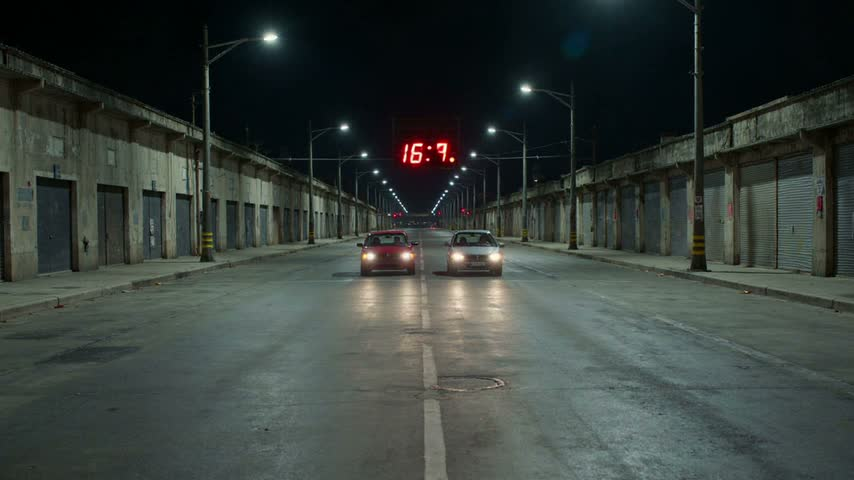
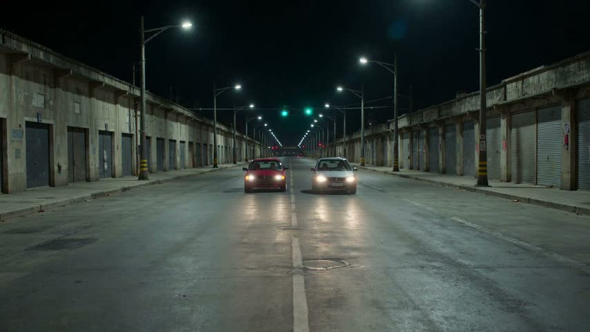
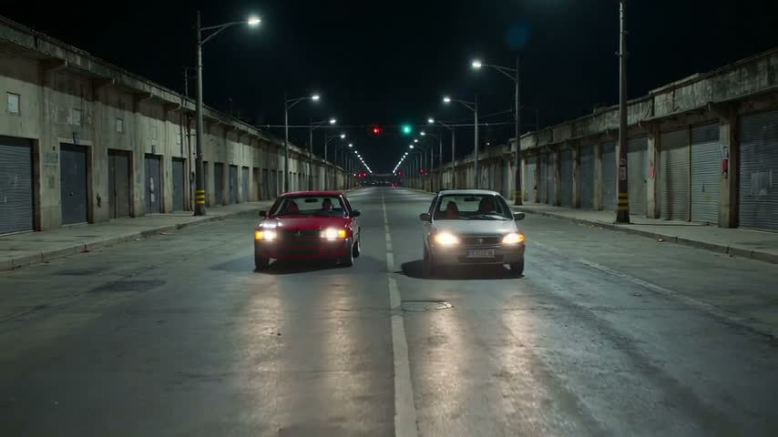
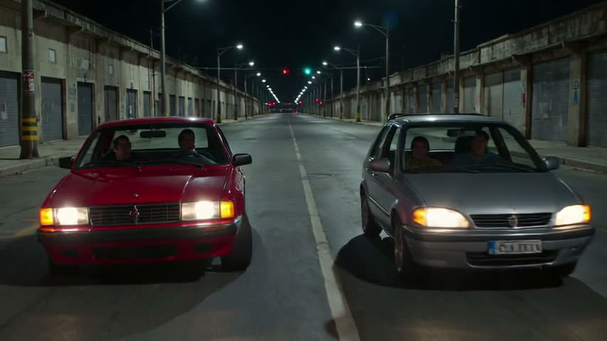
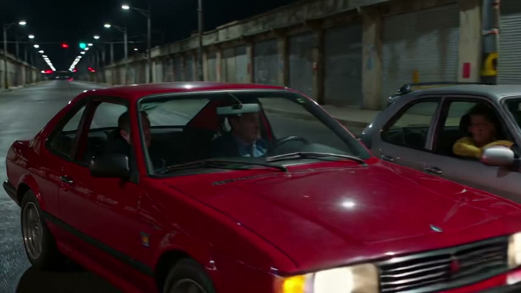
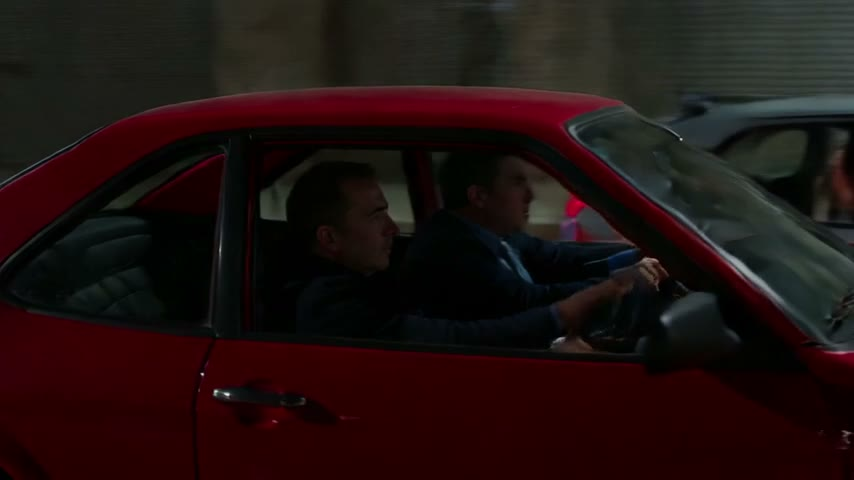
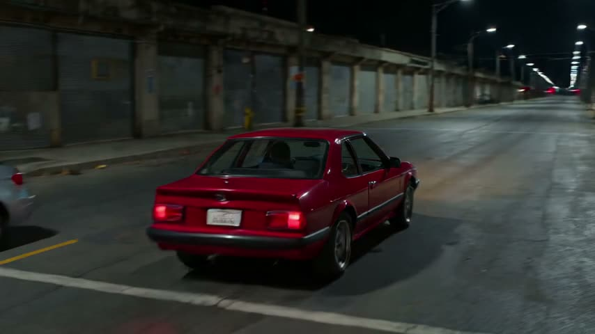
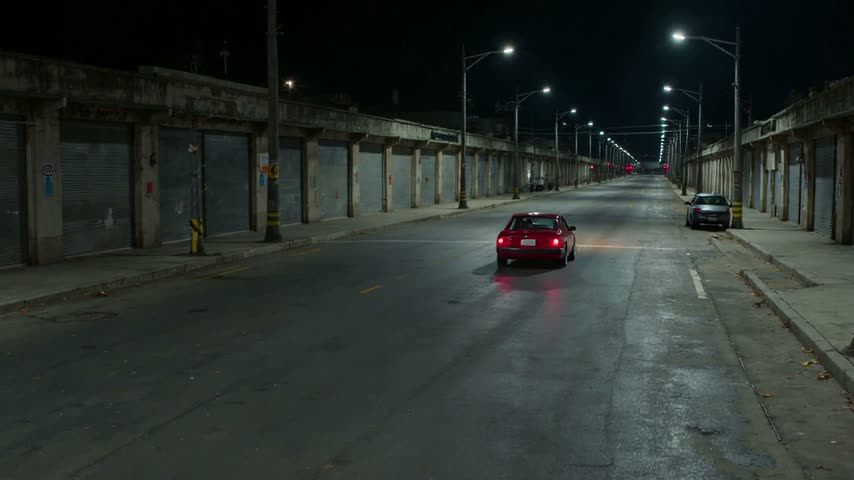
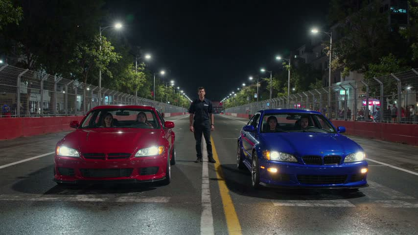
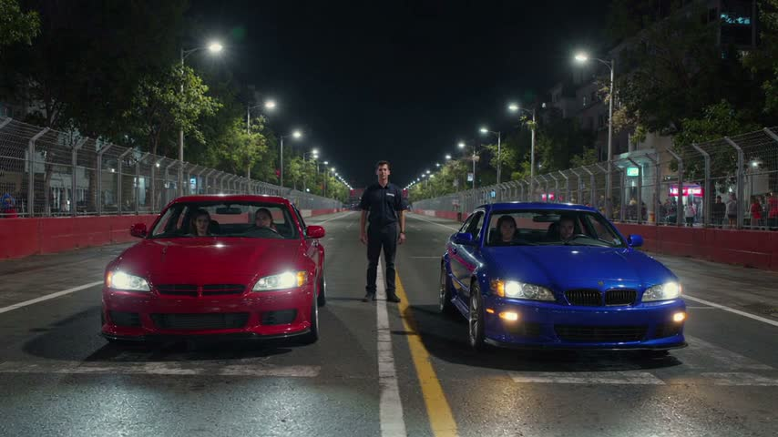
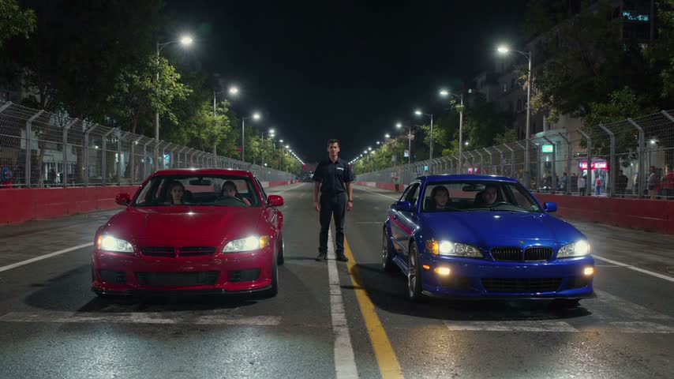
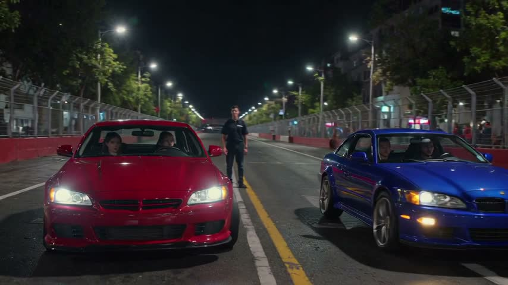
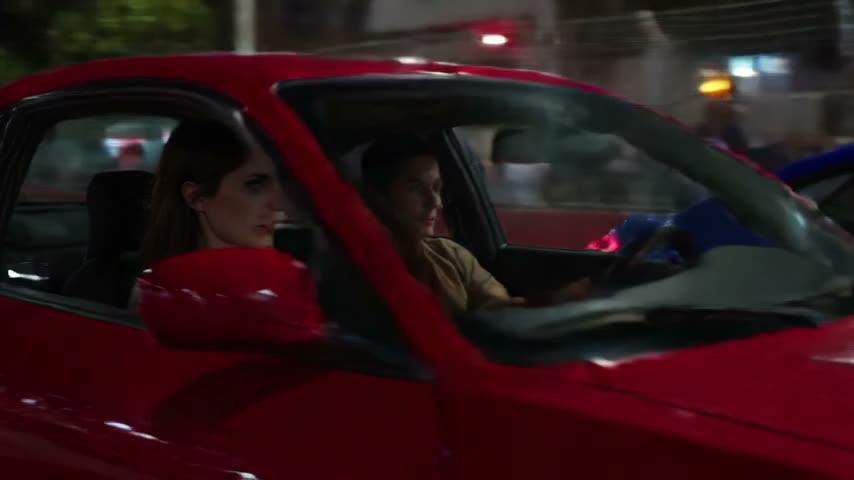
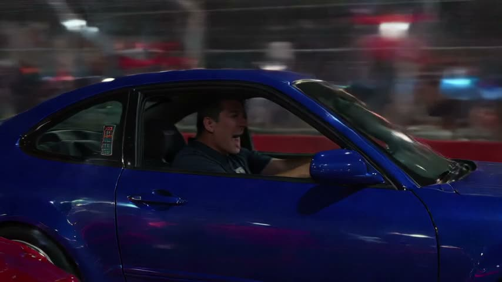
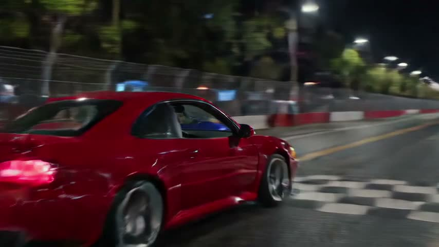
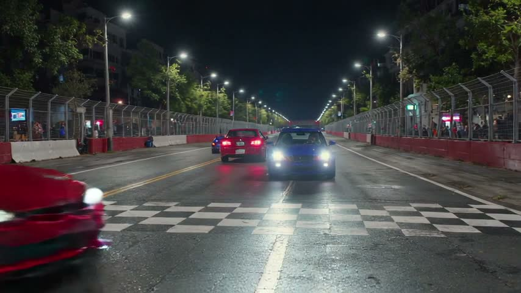
At night on an empty industrial boulevard, Mara grips the wheel of a modified red coupe beside Jace in a modified silver hatchback. Between their cars, a starter in a white jacket raises one hand. Streetlights gleam across the pavement as the engines climb into a rough, impatient roar. The starter counts down, “three, two, one, go,” drops his hand, and steps back as both cars launch from the line. Tires shriek; the coupe briefly loses traction while the hatchback surges ahead. Through his open window, Jace shouts toward Mara, “Keep up!” Mara steadies the red car, pulls alongside him, and shouts back, “Not tonight!” Their voices cut through the engines as the cars charge between the dark warehouses, nearly level. With the finish stripe approaching, Mara edges ahead by half a hood. The tense, defiant sprint ends as her red coupe crosses the finish first.
| kind | fiction · research not needed: This is a fictional race with no required real-world likenesses or facts. |
| people | Mara, the driver of the modified red coupe; Jace, the driver of the modified silver hatchback; A starter wearing a white jacket |
| place · time · mood | An empty industrial boulevard lined with shuttered warehouses · Night · Tense, defiant, and adrenaline-driven |
| exact words | none |
| seconds · aspect · sound | 16 s (The request explicitly asks for a 16-second scene.) · 16:9 · dialogue (The request explicitly asks for sound, a spoken countdown, and one shouted line from each driver over the engines; dialogue is accompanied by engine roars and tire noise.) |
| progression |
|
| specific · first frame | none · none |
{
"needs_research": false,
"aspect": "16:9",
"kind": "fiction",
"place": "An empty industrial boulevard lined with shuttered warehouses",
"sound": "dialogue",
"prose": "At night on an empty industrial boulevard, Mara grips the wheel of a modified red coupe beside Jace in a modified silver hatchback. Between their cars, a starter in a white jacket raises one hand. Streetlights gleam across the pavement as the engines climb into a rough, impatient roar. The starter counts down, “three, two, one, go,” drops his hand, and steps back as both cars launch from the line. Tires shriek; the coupe briefly loses traction while the hatchback surges ahead. Through his open window, Jace shouts toward Mara, “Keep up!” Mara steadies the red car, pulls alongside him, and shouts back, “Not tonight!” Their voices cut through the engines as the cars charge between the dark warehouses, nearly level. With the finish stripe approaching, Mara edges ahead by half a hood. The tense, defiant sprint ends as her red coupe crosses the finish first.",
"people": [
"Mara, the driver of the modified red coupe",
"Jace, the driver of the modified silver hatchback",
"A starter wearing a white jacket"
],
"first_frame": "",
"seconds_why": "The request explicitly asks for a 16-second scene.",
"time": "Night",
"seconds": 16,
"research_why": "This is a fictional race with no required real-world likenesses or facts.",
"exact_words": [],
"mood": "Tense, defiant, and adrenaline-driven",
"specific": [],
"progression": [
"a starter counts down 'three, two, one, go' at the line",
"two modified cars launch",
"while they race each driver shouts one short line to the other over the engines",
"end on the winner crossing the finish"
],
"sound_why": "The request explicitly asks for sound, a spoken countdown, and one shouted line from each driver over the engines; dialogue is accompanied by engine roars and tire noise."
}1782 characters (limit 2,000) · 5 beats · 5 shots · code check: length yes exact words yes
FORMATCreate a 16-second cinematic night street-racing scene featuring Mara and Jace on an empty industrial boulevard, widescreen 16:9. LOOKPhotorealistic, hard streetlight reflections, gritty asphalt and shuttered warehouses, tense and defiant. CONTINUITYFive coherent shots with natural cuts, consistent drivers, modified cars and boulevard throughout. BEAT 10–3 seconds: medium-wide two-car starting-line view, a starter in a white jacket counts down between Mara’s modified red coupe and Jace’s modified silver hatchback, warehouse shutters behind him, slow push-in. BEAT 23–6 seconds: low wide view, the red coupe and silver hatchback launch together from the painted starting line, streetlights gleaming on pavement, fast lateral tracking. BEAT 36–10 seconds: close two-driver composition through open side windows, Jace in the silver hatchback and Mara in the red coupe shout one short challenge each toward the other during their neck-and-neck race, dark warehouse walls behind them, parallel tracking move. BEAT 410–13 seconds: low three-quarter wide view, Mara’s red coupe crosses the painted finish stripe first by half a hood ahead of Jace’s silver hatchback, industrial lamps overhead, sweeping lateral slide. BEAT 513–16 seconds: elevated wide establishing view of the empty finish stripe and shuttered warehouses alone, gentle ease-back into a final still composition. Sound: impatient engine rumble builds into roaring acceleration, launch tire shriek, rushing air; voices cut clearly through the engines. 0–3 seconds, starter says "three, two, one, go"; 6–8 seconds, Jace shouts "Keep up!"; 8–10 seconds, Mara shouts "Not tonight!" HOLDHold the empty finish-line image still for the final two seconds. GRADECool cinematic shadows, vivid red highlights, urgent pacing. NEGATIVESNo voiceover, subtitles, text overlays or extra traffic.
| # | range | shows |
|---|---|---|
| 1 | 0–3 s | White-jacketed starter counts down between Mara’s and Jace’s cars. |
| 2 | 3–6 s | Modified red coupe and silver hatchback launch together. |
| 3 | 6–10 s | Jace and Mara shout challenges during their neck-and-neck race. |
| 4 | 10–13 s | Mara’s red coupe crosses the finish first by half a hood. |
| 5 | 13–16 s | Empty finish stripe and warehouses establish the final still image. |
FORMATCreate a 16-second widescreen cinematic night street-racing action scene WITH synchronized sound and intelligible English dialogue. LOOKA closed urban street race course at night, wet asphalt reflecting neon lights, two modified cars: a red coupe driven by an adult woman and a blue coupe driven by an adult man. CONTINUITYMaintain these cars and drivers consistently. LOOKTight, fast-paced coherent cinematic editing with clear spatial continuity. BEAT 10–4 seconds: both cars stationary side by side at the starting line, engines revving. An adult starter standing safely beside the course clearly counts aloud: 'Three, two, one, go!' Give each count its own beat; cars launch only on 'go'. BEAT 24–7 seconds: both modified cars launch together with tire squeal, low tracking shot racing alongside, roaring engines and shifting gears. BEAT 37–10 seconds: quick interior closeup of the red-car driver looking toward the other car and shouting exactly 'Try to keep up!' over the engines. BEAT 410–13 seconds: quick interior closeup of the blue-car driver shouting back exactly 'Not a chance!' while accelerating. Dialogue is audible above engine noise, each line assigned only to its correct speaker with synchronized mouth movements, no simultaneous dialogue. BEAT 513–16 seconds: exterior tracking shot shows red coupe edging ahead, then a decisive wide finish-line shot: red coupe crosses a clearly painted checkered finish line first, blue coupe just behind. End on the winner crossing the finish, no extra epilogue. Realistic high-energy action, dynamic headlights, detailed modified cars, controlled camera movement, believable vehicle physics. Sound: starter's countdown, two short driver lines, loud racing engines ducked under speech, gear shifts, tires and night-city ambience. No narration, no subtitles, no music.
# The operational prompt (text-to-video)
The Magic Hour guide says: specify the subject, one action, camera move, framing and mood; request only audio and
duration the model supports; then review the actual result. The prompt that works is ONE prose paragraph, under 2,000
characters, in this order:
1. FORMAT: the duration, the kind of piece, the subject, the aspect, in one sentence.
"Create a 16-second cinematic advertisement for Petal & Stem, a small neighbourhood flower shop. Widescreen 16:9."
2. LOOK: medium, light, mood, the texture of the world, in one sentence. For action, the look line also carries the
ENERGY in plain words ("tight, fast-paced editing, roaring engines, cars accelerating hard, streetlights streaking
past"): the model renders the pace it is told, and a race described calmly comes out slow.
"Photorealistic, intimate, warm natural dawn sunlight, soft golden highlights, authentic lived-in neighbourhood."
3. CONTINUITY: how many shots, and what stays the same across them, in one sentence.
"Four coherent shots with natural edits, same florist, shop and bouquet throughout."
4. BEATS: timed ranges that together cover the whole duration, in order. Each beat, in this order: the time range,
the framing, the subject with one identifying detail, ONE action, one environment detail, the camera or lens.
"0–4 seconds: exterior medium-wide shot at dawn, an adult florist in a sage-green apron unlocks and opens the
wood-and-glass shop door, warm sunlight on the flower buckets beside the entrance."
One action per beat. Never two things happening. Never a thing that must appear later mentioned early.
The request's own verbs are the beats' actions and each gets its own beat: "arranges a bouquet" is a beat of hands
placing stems, and wrapping is a different action; do not merge two of the request's actions into one beat.
When possession changes, the beat ends with the new state stated plainly: "the customer now holds the bouquet, the
florist's hands are empty".
The last beat is a separate establishing shot with no new action: the place alone, or the people standing still.
Every beat has a camera MOVE (push, slow orbit, lateral slide, ease back, handheld follow), never "stationary" or
"locked-off" except the final hold. Name the key object concretely once (blush pink roses, cream flowers, brown
kraft paper), not "a bouquet"; the model renders nouns it is given.
A beat is 3–6 seconds, so a 16-second clip has 3–5 beats and a 30-second clip 5–8. Two-second beats make a
cut every two seconds, which the model renders as a jumble; the shot count in CONTINUITY equals the beat count.
5. EXACT WORDS: any lettering the video must show, quoted once, inside the beat where it is seen.
"clear tasteful shop sign reads exactly 'Petal & Stem'."
6. SOUND (only when audio is on): ambient, or the character of music, or the spoken lines quoted with their time
range and who speaks. Narration and dialogue are the expensive part of the budget; keep them short.
7. HOLD: the last beat ends on a still, readable image. "Hold on the storefront for the final two seconds."
8. GRADE: colour treatment and pacing, one short sentence. "Gentle cinematic colour grade, calm uplifting pacing."
9. NEGATIVES: one line, last, only what the model would otherwise add. "No voiceover, no subtitles, no text overlays."
Quality words are descriptive, never technical: cinematic, photorealistic, shallow depth of field, natural hands and
anatomically correct movement, realistic textures. No resolution words, no "8k", no seeds, no camera brands.
Never: shot-list headings, a separate negatives block, a constraint on every sentence, "do not show X" for things that
appear later, repeating a sentence, a sign mentioned in a beat where it must not be seen.
Budget: about 450 characters go to format, look, continuity, hold, grade and negatives. The rest is beats, about 200
characters each. Compress the story into the beats; do not paste it.
# Image-to-video (a start frame is supplied)
Same slots, same order, two changes:
- FORMAT shrinks to the duration and "matching the source image" (the aspect is the image's).
- LOOK becomes PRESERVE: name what the image already fixes and must stay: "Preserve the woman's face, dark hair in a
low bun and cream jacket, and the bouquet of yellow, magenta, cream and red flowers in pale paper, exactly as in the
image; keep the morning light and the doorway."
- The first beat describes the image as it is and the first motion out of it, so the model continues the picture
instead of cutting away. Later beats may cut, with the continuity sentence naming the same people and the bouquet by
the same words every time.
# When people carry the scene (a handoff, a conversation, a reunion)
The MCP's scene 2 clip read as more alive than ours with the same still route. The differences were in the prompt:
- ONE continuous shot with a very slow push in, not five cuts in 16 seconds. On image-to-video every cut abandons the
start frame; one shot keeps the faces and lets a performance develop.
- Performance verbs and eye lines in every beat: "exchanging warm eye contact", "he smiles warmly and reaches out with
both hands", "they exchange affectionate smiles", "she steps close beside him". Behaviour, not inventory.
- A physically ordered action: "only after he has a firm grip does she release it".
- PRESERVE is three anchors per person (hair, one garment, one detail) and one line for the object, said once. The
identity is in the start frame; a 600-character inventory repeated in every beat buys nothing and starves the beats.
- End on the faces: "a stable medium two-shot showing both faces and the bouquet, hold three seconds", not a wide
establishing shot of people standing still.
- Framing: the seed still should be a medium shot where faces are large enough to act; a medium-wide doorway reads
as staging.
| call | text-to-video · model ltx-2.5 · 16 s · 16:9 · 480p · audio on · references none |
| credits · time | 0 credits (cached) · 0 s wall · rendered 16 s |
| prompt sent | the operational prompt above, unchanged |
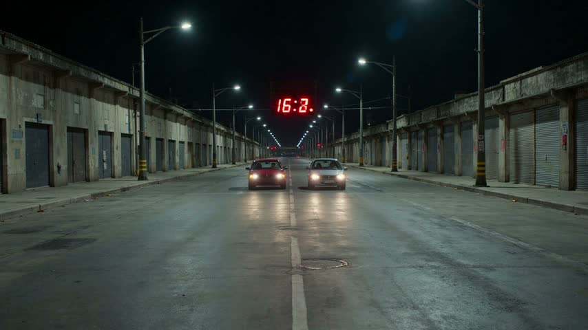
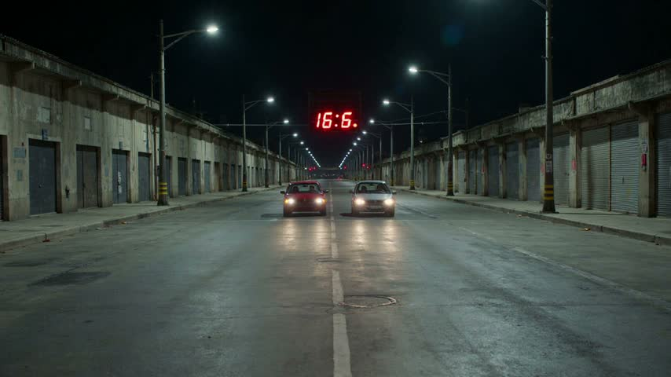
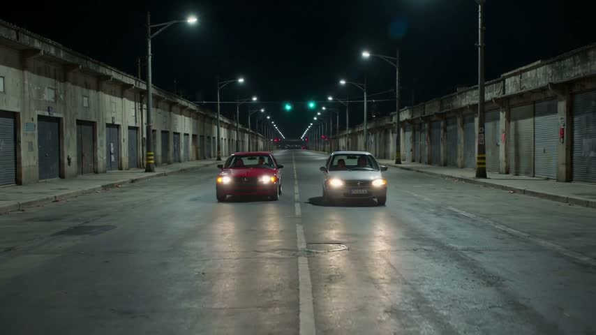
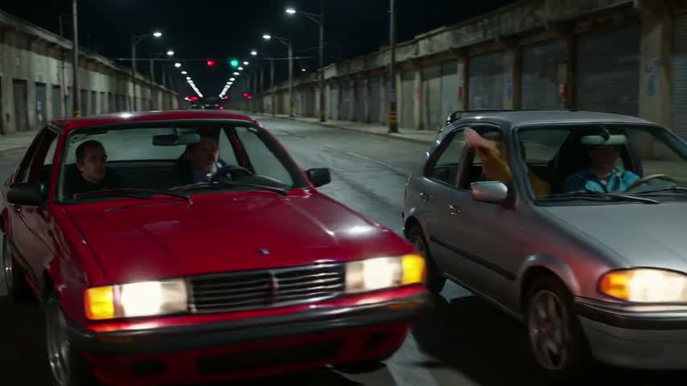
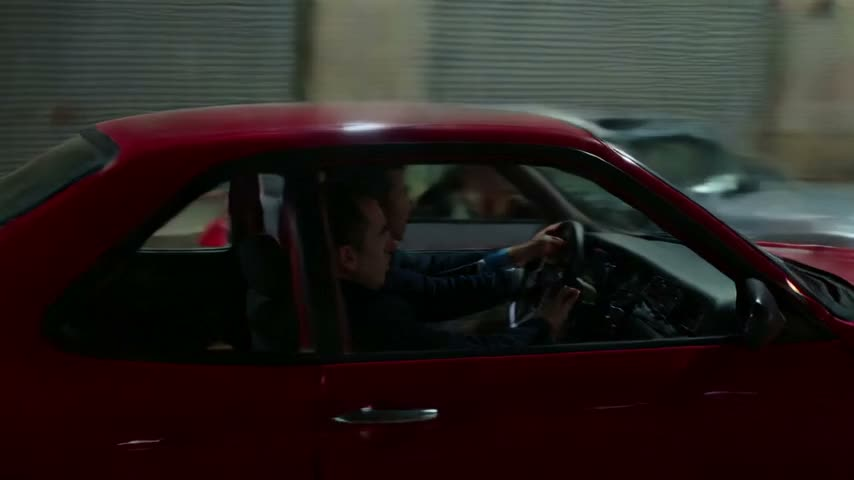
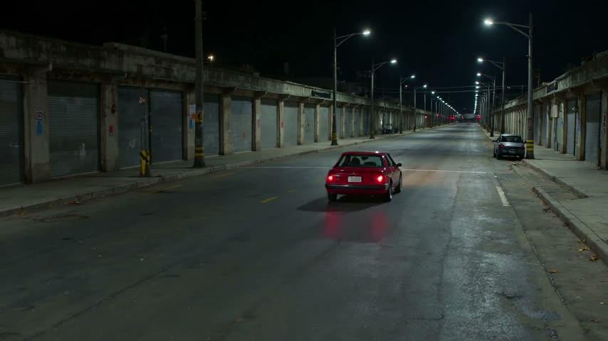
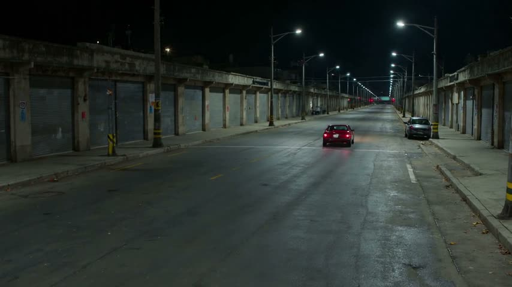
| beat | subject present | action seen | evidence |
|---|---|---|---|
| 1 | no | no | Two cars wait side by side; no white-jacketed starter stands between them. |
| 2 | yes | yes | Red and silver cars advance together under green lights. |
| 3 | yes | unclear | Both cars race neck and neck, with occupants visible and an arm raised; shouting is not visually clear. |
| 4 | yes | no | Red car appears alongside the silver car; no finish stripe or half-hood winning margin is visible. |
| 5 | no | no | Warehouses remain visible, but the red car is still departing and no finish stripe is discernible. |
| exact words | none required |
| same people and place | yes |
| last frame holds | no |
| lines asked vs heard | “three, two, one, go” → heard “Three, two, one, go!” yes on time yes “Keep up!” → heard “Keep up!” yes on time yes “Not tonight!” → heard “Not tonight!” yes on time unclear voices consistent: unclear |
| transcript (whisper-1) | [0–2.5 s] Three, two, one, go! [6.6–15.8 s] Keep up! Not tonight! |
| artifacts | The red car's body appears to change from a boxy coupe in the close frontal view to a hatchback-like rear profile. |
| failures | beat 1 (0–3 s) must show White-jacketed starter counts down between Mara’s and Jace’s cars.; beat 4 (10–13 s) must visibly show the action: Mara’s red coupe crosses the finish first by half a hood. (seen instead: Red car appears alongside the silver car; no finish stripe or half-hood winning margin is visible.); beat 5 (13–16 s) must show Empty finish stripe and warehouses establish the final still image.; the final two seconds hold one still, readable image of the place with no new action |
| call | text-to-video · model ltx-2.5 · 16 s · 16:9 · 480p · audio on · references none |
| credits · time | 384 credits · 45 s wall · rendered 16 s |
| failures folded in | beat 1 (0–3 s) must show White-jacketed starter counts down between Mara’s and Jace’s cars.; beat 4 (10–13 s) must visibly show the action: Mara’s red coupe crosses the finish first by half a hood. (seen instead: Red car appears alongside the silver car; no finish stripe or half-hood winning margin is visible.); beat 5 (13–16 s) must show Empty finish stripe and warehouses establish the final still image.; the final two seconds hold one still, readable image of the place with no new action |
| prompt sent | Create a 16-second night street-racing scene with Mara and Jace on an empty industrial boulevard, widescreen 16:9. Photorealistic, streetlight reflections, gritty asphalt, shuttered warehouses, tense and defiant. Five coherent shots with natural cuts; consistent drivers, modified cars and boulevard throughout. 0–3 seconds: medium-wide starting-line view; a fully visible white-jacketed starter stands between Mara’s modified red coupe and Jace’s modified silver hatchback and visibly counts down, warehouse shutters behind him; slow push-in. 3–6 seconds: low wide view; both cars launch together from the painted starting line, streetlights on pavement; fast lateral tracking. 6–10 seconds: close two-driver composition through open side windows; Jace in the silver hatchback and Mara in the red coupe each shout one short challenge toward the other while racing neck-and-neck, warehouse walls behind; parallel tracking. 10–13 seconds: low three-quarter wide view; sweeping lateral slide keeps the painted finish stripe and both front bumpers clearly visible. Mara’s red coupe visibly crosses first; at that instant Jace’s front bumper is half a hood-length behind hers, short of the stripe. Industrial lamps overhead. Both cars clear frame by the cut. 13–16 seconds: elevated wide establishing view of the empty finish stripe and shuttered warehouses alone; ease back until 14 seconds, then lock into one still, readable image through 16 seconds; the empty scene stays unchanged. Sound: impatient engine rumble builds into roaring acceleration, launch tire shriek, rushing air; voices cut clearly through the engines. 0–3 seconds, starter says "three, two, one, go"; 6–8 seconds, Jace shouts "Keep up!"; 8–10 seconds, Mara shouts "Not tonight!" Hold the empty finish-line image still for the final two seconds. Cool shadows, red highlights, urgent pacing. No voiceover, subtitles, text overlays or extra traffic. |
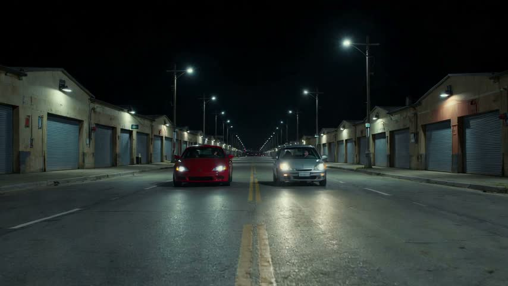
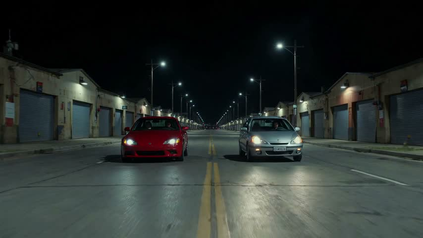
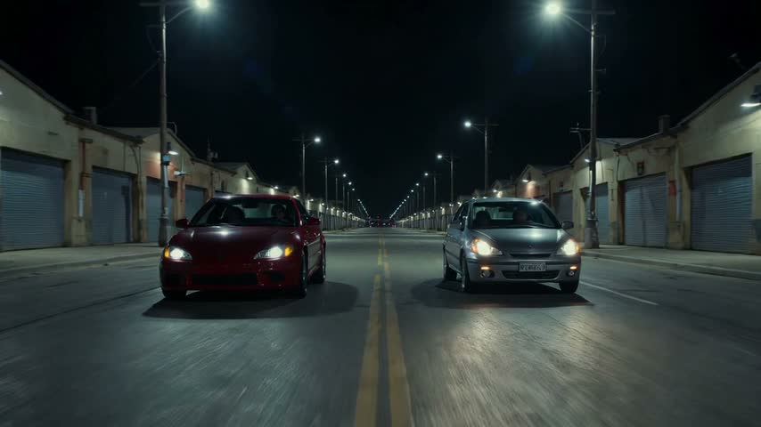
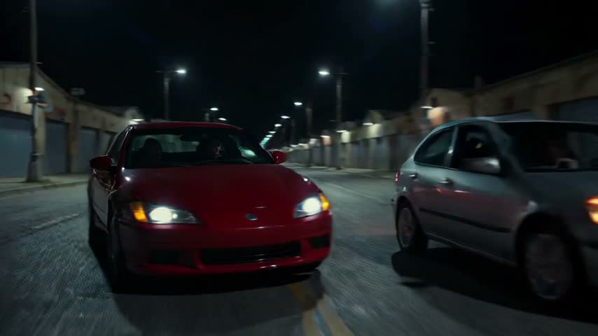
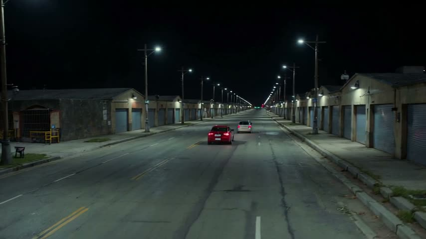
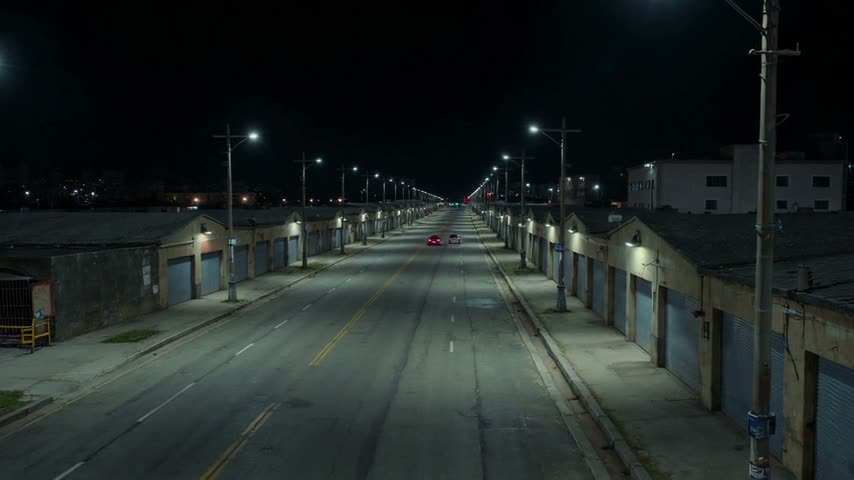
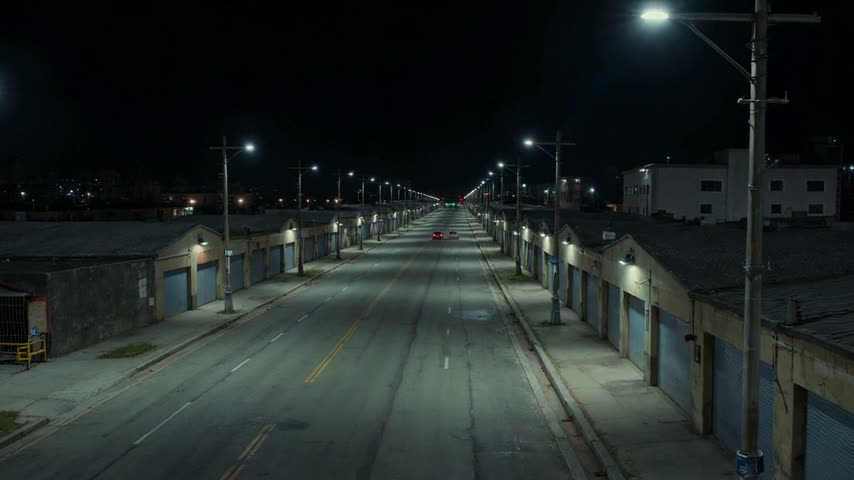
| beat | subject present | action seen | evidence |
|---|---|---|---|
| 1 | no | no | Both cars are present, but nobody stands between them; no white-jacketed starter is visible. |
| 2 | yes | unclear | Red coupe and silver hatchback race side by side; a simultaneous launch cannot be established from this frame. |
| 3 | yes | no | Drivers are dimly visible in the adjacent cars, but no shouting is evident and neither challenge appears in the transcript. |
| 4 | yes | no | Both cars recede down the street, with silver ahead of red; no finish stripe or half-hood red victory is visible. |
| 5 | no | no | Warehouses surround the road, but no finish stripe is visible and both cars remain in the distance. |
| exact words | none required |
| same people and place | yes |
| last frame holds | unclear |
| lines asked vs heard | “three, two, one, go” → heard “Three, two, one, go! [0–5.6 s]” yes on time no “Keep up!” → heard “No corresponding speech transcribed.” no on time no “Not tonight!” → heard “No corresponding speech transcribed.” no on time no voices consistent: no |
| transcript (whisper-1) | [0–5.6 s] Three, two, one, go! |
| artifacts | none noted |
| failures | beat 1 (0–3 s) must show White-jacketed starter counts down between Mara’s and Jace’s cars.; beat 3 (6–10 s) must visibly show the action: Jace and Mara shout challenges during their neck-and-neck race. (seen instead: Drivers are dimly visible in the adjacent cars, but no shouting is evident and neither challenge appears in the transcript.); beat 4 (10–13 s) must visibly show the action: Mara’s red coupe crosses the finish first by half a hood. (seen instead: Both cars recede down the street, with silver ahead of red; no finish stripe or half-hood red victory is visible.); beat 5 (13–16 s) must show Empty finish stripe and warehouses establish the final still image.; the line "Keep up!" must be spoken clearly (heard: "No corresponding speech transcribed."); the line "Not tonight!" must be spoken clearly (heard: "No corresponding speech transcribed.") |
clip-1.mp4 · review FAIL · state record: Mara, the driver of the modified red coupe; Jace, the driver of the modified silver hatchback; A starter wearing a white jacket at An empty industrial boulevard lined with shuttered warehouses, Night; words seen: none; last frame frames/clip-1-last.jpg[
{
"clip": "clip-1.mp4",
"seconds": 16,
"people": [
"Mara, the driver of the modified red coupe",
"Jace, the driver of the modified silver hatchback",
"A starter wearing a white jacket"
],
"place": "An empty industrial boulevard lined with shuttered warehouses",
"time": "Night",
"mood": "Tense, defiant, and adrenaline-driven",
"words_seen": [],
"last_frame": "frames/clip-1-last.jpg"
}
]| # | kind | what | credits |
|---|---|---|---|
| 1 | LLM | v3-story-v1 · the story record from the request | 0 |
| 2 | LLM | v3-prompt-v1 · the operational prompt from the sequence and the guide | 0 |
| 3 | LLM | v3-review-v1 · review of clip-1 on 7 frames | 0 |
| 4 | LLM | v3-prompt-fix-v1 · the prompt with the review's failures folded in | 0 |
| 5 | LLM | v3-prompt-shorten-v1 · the fixed prompt was over the limit | 0 |
| 6 | LLM | v3-review-v1 · review of clip-1-retry on 7 frames | 0 |
| 7 | text-to-video | /v1/text-to-video · ltx-2.5 16 s 480p audio on | 0 |
| 8 | ffmpeg | frames of clip-1: first, each beat's middle, last | 0 |
| 9 | whisper-1 | transcript of clip-1 with timed segments | 0 |
| 10 | text-to-video | /v1/text-to-video · ltx-2.5 16 s 480p audio on · 45 s | 384 |
| 11 | ffmpeg | frames of clip-1-retry: first, each beat's middle, last | 0 |
| 12 | whisper-1 | transcript of clip-1-retry with timed segments | 0 |
| total | 384 |
LLM usage: 2 calls, 6141 in / 1192 out tokens · the MCP's run for this brief: 4 calls, 384 credits, 74 s end to end, no machine review.